Purpose and mental model. Forward Error Correction protects loss-sensitive traffic by creating repair packets before loss happens. The sender groups original packets and generates redundant information; the receiver can reconstruct missing members without waiting for the application or transport layer to retransmit. That makes FEC fundamentally different from retransmission and especially useful for voice, video, and other real-time UDP flows where recovery delay is itself harmful.
Mechanics. On FortiGate IPsec overlays, FEC is enabled on the tunnel and selected firewall-policy traffic. The base/redundant ratio determines coding overhead. Send and receive timeouts control how long each side waits to form or recover a coding group. Adaptive FEC can change redundancy as measured loss changes. FEC traffic is processed in software rather than being treated like an ordinary NPU-offloaded flow, so CPU and bandwidth cost must be part of the design.
Configuration / implementation. Implementation example: disable NPU offload on the relevant IPsec tunnel, enable fec-egress and fec-ingress, set a base/redundant ratio appropriate to observed loss, then enable FEC on only the firewall policies carrying traffic that benefits from it. Validate both directions because asymmetric configuration can leave one side unprotected.
Evidence and verification. Useful evidence includes Performance SLA loss/jitter, a long sourced ping through the overlay, firewall/session counters, and `diagnose vpn tunnel fec
Failure mode and troubleshooting. A common failure is enabling FEC broadly because a WAN is lossy without accounting for software-processing cost. Another is keeping a fixed redundant/base ratio after the loss profile changes. Third-party IPsec peers do not implement Fortinet-specific FEC behavior, so interoperability must be verified rather than assumed.
Design, scale, and operational implications. Design FEC selectively. Moderate packet loss on interactive UDP can justify the overhead; bulk TCP usually has its own recovery mechanisms. Capacity-test CPU and WAN overhead, document the targeted traffic classes, and retest after platform or FortiOS changes that affect dataplane behavior.
Primary documentation: https://docs.fortinet.com/document/fortigate/7.6.0/sd-wan-architecture-for-enterprise/228050/forward-error-correction-fec
Scenario source: https://community.fortinet.com/fortigate-3/troubleshooting-tip-resolve-packet-loss-in-sd-wan-with-tunnel-overlay-network-145537
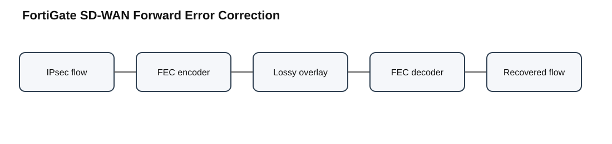
Purpose and mental model. FortiSwitch templates let FortiManager express repeatable switch intent while preserving hardware-model awareness. A template can define VLAN membership, port policies, LLDP/QoS behavior, DHCP blocking, loop/STP guards, PoE behavior, trunks, and custom commands. Platform selection matters because capabilities vary by switch model and even by port type.
Mechanics. The transaction is template definition → platform/port validation → assignment to a compatible managed switch → install verification → FortiGate/FortiSwitch rendering. A template can be syntactically valid in FortiManager and still be invalid for a particular target because the selected physical port cannot implement one of the requested fields.
Configuration / implementation. Build templates by selecting the target platform first, defining only capabilities that exist on that model, assigning VLAN/port policy objects, and then applying the template to compatible switches. Before install, use assignment and Where Used views to understand blast radius. After an ADOM or FortiOS upgrade, re-run verification instead of assuming the previous schema remains valid.
Evidence and verification. The most valuable evidence is the verification/install report because it identifies the object, port, and field that failed. Compare that report with the target switch model and port capabilities. A green policy-package status elsewhere does not prove the FortiSwitch template is valid.
Failure mode and troubleshooting. A documented upgrade case shows `fec-state cl91` being applied to ports that do not support FEC after a FortiOS transition. The narrow correction is removing that unsupported setting from affected template entries while retaining it on capable high-speed ports. Recreating the whole template would hide the specific compatibility boundary.
Design, scale, and operational implications. Treat templates as typed configuration rather than generic text. Split templates when hardware capability differs materially, stage upgrades against representative models, and preserve model/port verification output as part of the change record.
Primary documentation: https://docs.fortinet.com/document/fortimanager/7.6.6/administration-guide/794641/creating-fortiswitch-templates
Scenario source: https://community.fortinet.com/fortimanager-27/troubleshooting-tip-policy-package-installation-fails-after-fortigate-upgrade-from-v7-2-to-v7-4-due-to-invalid-fec-state-setting-in-the-fortiswitch-template-228241
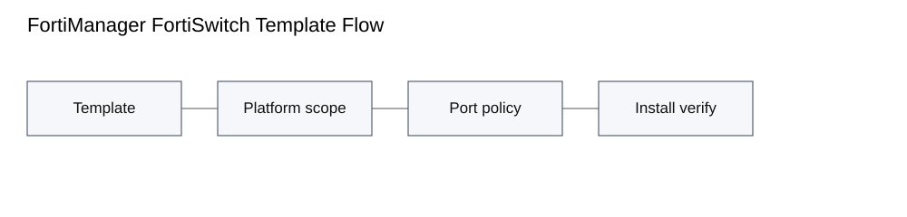
Purpose and mental model. Fetcher Management lets a FortiAnalyzer retrieve selected historical logs from another FortiAnalyzer and optionally index them for reporting. This is more precise than restoring an entire backup when an investigation needs one device or time window that is outside the current Analytics retention.
Mechanics. The receiving FortiAnalyzer acts as fetch client and the source acts as fetch server. A client profile identifies client/server ADOMs, device scope, time range, optional filters, transport settings, and whether fetched logs should be indexed. In Collector/Analyzer designs, a Collector can serve logs to an Analyzer.
Configuration / implementation. Create a narrowly scoped fetch profile, map the correct ADOMs, select only required devices and dates, enable indexing when the data must appear in Analytics/reporting, and confirm disk quota before a large fetch. Broad historical indexing can consume substantial storage and index resources.
Evidence and verification. Watch fetch progress and then verify that the expected device/time range is actually searchable. For failures, `diagnose debug application log-fetchd 8` with debug enabled gives daemon-level detail. Connectivity must support the required path; Fortinet troubleshooting material calls out bidirectional TCP/514, ACL/firewall reachability, compatible versions, and correct ADOM mappings.
Failure mode and troubleshooting. A completed transfer does not prove the requested records were indexed. If the GUI reports Generic Error, test network reachability and log-fetchd before rebuilding reports or importing archives. If transport succeeds but data is absent, inspect scope, ADOM, time range, and index settings.
Design, scale, and operational implications. For large investigations, use a dedicated reporting ADOM/quota and fetch the minimum period needed. Record source FortiAnalyzer, source retention state, target quota, and validation query so the evidence chain remains reproducible.
Primary documentation: https://docs.fortinet.com/document/fortianalyzer/7.6.0/best-practices/836919/use-fetcher-management-for-log-fetching
Scenario source: https://community.fortinet.com/fortianalyzer-6/troubleshooting-tip-debugging-for-log-fetches-140968
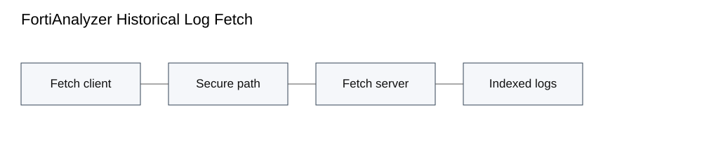
Purpose and mental model. Sticky MAC learning converts dynamically learned source MAC addresses into persistent interface bindings. The immediate purpose is to preserve a known endpoint-to-port association through brief link transitions, but operationally it also acts as a port-security mechanism when combined with learning limits.
Mechanics. Enabling sticky MAC changes the lifetime of learned entries. Runtime sticky entries can survive port down/up events; `execute sticky-mac save` persists the learned population into configuration so it can survive reboot. That distinction between learned runtime state and saved configuration is important during troubleshooting.
Configuration / implementation. Enable sticky behavior only on intentionally stable access ports, allow the expected endpoint population to learn, inspect the resulting table, and save only after validation. On FortiGate-managed FortiSwitch, use the switch-controller action for the targeted switch and interface.
Evidence and verification. Evidence must answer two questions: which MAC is bound to which port, and is the binding runtime-only or saved. After a port flap, confirm the same association remains. After a device move, search for a stale sticky entry on the old interface before investigating unrelated VLAN or routing behavior.
Failure mode and troubleshooting. The characteristic failure is moving a device without removing its old sticky binding. The new interface can appear unable to learn the endpoint because the authoritative association remains elsewhere. Fortinet also cautions about interaction with authentication/static MAC controls; do not design overlapping controls for the same endpoint without validating the behavior.
Design, scale, and operational implications. Use a documented move/add/change workflow that clears old entries before relocation. Periodically audit saved entries so temporary devices are not made permanent accidentally. Treat the sticky table as security state, not just switching cache.
Primary documentation: https://docs.fortinet.com/document/fortiswitch/7.6.2/fortiswitchos-administration-guide/287006/persistent-sticky-mac-addresses
Scenario source: https://community.fortinet.com/fortiswitch-36/technical-tip-persistent-mac-learning-or-sticky-mac-feature-94457
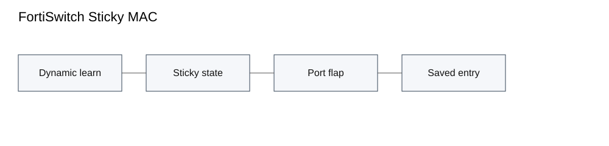
Purpose and mental model. 802.11r Fast BSS Transition reduces roam interruption by allowing a client to move between APs using an FT key hierarchy instead of repeating the complete enterprise authentication exchange at each roam. The benefit matters most for voice and other applications sensitive to authentication latency.
Mechanics. On a FortiGate-managed SSID, Fast BSS Transition is enabled on the VAP. The mobility domain identifies participating APs, and key lifetime controls how long the derived FT context remains valid. Fortinet optimized large-scale operation so roaming context can be pulled from the current AP and delivered to the target AP instead of flooding all radios.
Configuration / implementation. Configure the SSID security mode and RADIUS service normally, enable `fast-bss-transition`, set a consistent mobility-domain value for the intended roam domain, and validate client compatibility. 802.11k/v can improve neighbor awareness and steering, but they do not replace the FT authentication mechanism.
Evidence and verification. Do not infer FT operation from a GUI checkbox. Capture beacons/probe responses to verify the Mobility Domain and FT AKM are advertised, then capture reassociation to determine whether the client actually used FT. RADIUS logs are valuable because a new full EAP exchange during every roam is evidence that FT is not being used.
Failure mode and troubleshooting. A recent investigation showed clients apparently completing full WPA3-Enterprise authentication because the expected FT advertisement was absent. That symptom narrows troubleshooting to advertised security capabilities, SSID configuration, client support, and controller behavior rather than RF signal alone.
Design, scale, and operational implications. Roaming is still a client decision. Validate RF cell overlap, client driver support, PMF/WPA mode, mobility-domain consistency, and application impact. Pilot with the actual voice/real-time endpoints before enabling FT across every WLAN.
Primary documentation: https://docs.fortinet.com/document/fortigate/7.0.0/new-features/184445
Scenario source: https://community.fortinet.com/support-forum-92/wpa3-enterprise-fast-roaming-802-11r-investigation-229011
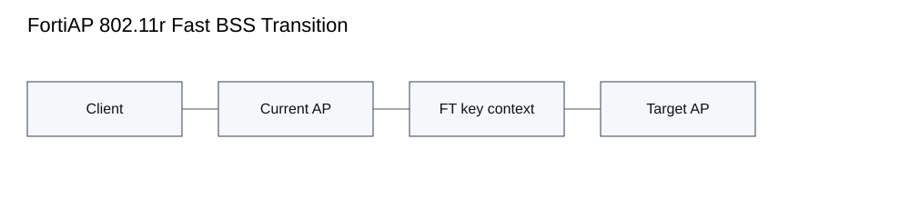
Purpose and mental model. Endpoint compliance decides whether a connecting host is scanned, allowed, remediated, or denied according to ordered policies. The key mental model is that identity/location matching and compliance treatment are separate objects: a User/Host Profile determines whether a policy applies, while an Endpoint Compliance Configuration determines what checks and treatment occur.
Mechanics. FortiNAC evaluates endpoint-compliance policies from highest to lowest and uses the first matching profile. The selected configuration controls agent requirements, scans, and response to noncompliance. Persistent, dissolvable, passive, and mobile agent approaches support different endpoint-management models, but policy selection happens before the scan result is enforced.
Configuration / implementation. Build a precise User/Host Profile, create the compliance configuration, order the policy intentionally, and test with a host known to match that profile. During rollout, separate monitor-only validation from hard enforcement so an object or agent error does not unexpectedly isolate production endpoints.
Evidence and verification. Troubleshooting evidence should prove the matched policy, selected compliance configuration, agent execution, individual scan results, and final access state. Successful authentication alone proves none of those later stages. If a policy seems absent, inspect referenced objects rather than immediately recreating the rule.
Failure mode and troubleshooting. A Fortinet support case documents endpoint-compliance configurations existing in the database but not appearing in the GUI because a referenced Group object had been deleted. That failure demonstrates dependency integrity: the configuration can exist while its object graph is broken.
Design, scale, and operational implications. Keep profiles minimally overlapping and record policy order. Validate agent/OS compatibility and definition updates before making compliance mandatory. When a host is unexpectedly denied, identify the first failed stage—profile match, configuration selection, scan, or enforcement—before changing access policy.
Primary documentation: https://docs.fortinet.com/document/fortinac/9.4.0/administration-guide/985922/endpoint-compliance-policies
Scenario source: https://community.fortinet.com/fortinac-28/troubleshooting-tip-endpoint-compliance-configurations-not-showing-in-gui-129950
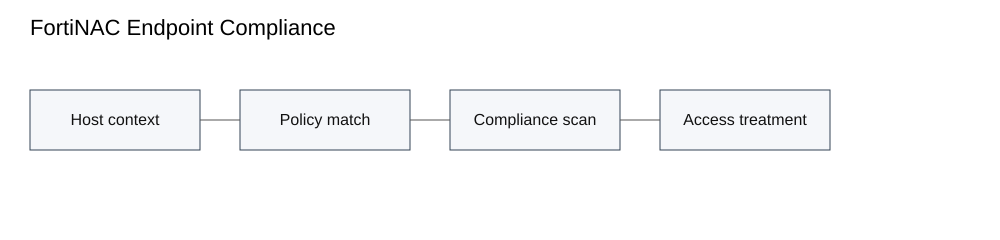
Purpose and mental model. FortiNAC-F can extend NAC context into FortiGate policy by sending user/host information and dynamic firewall tags. This moves enforcement beyond VLAN assignment: FortiGate can consume identity/tag membership in firewall rules while FortiNAC-F remains the source of endpoint context.
Mechanics. Fortinet documents connector-based FSSO tags and dynamic-address-tag integration methods. FortiNAC-F evaluates the host/session, derives the configured tag or group, sends logon/logoff state to FortiGate, and FortiGate materializes that state in dynamic objects used by policy. Session identity and lifecycle are therefore part of the transaction.
Configuration / implementation. Configure the FortiGate service connector/Security Fabric SSO relationship, define tag mappings, and then reference the resulting dynamic identity/tag in FortiGate policy. When multiple FortiGates are managed, use the integration method consistently and understand which side owns tag lifecycle.
Evidence and verification. Troubleshoot from left to right: prove the NAC access policy matched, inspect the tag/group generated for the session, verify connector delivery, verify FortiGate dynamic object membership, then verify the firewall rule match. A correct VLAN does not prove any firewall tag was created.
Failure mode and troubleshooting. A community case showed wired sessions receiving tags while Wi-Fi sessions matched the expected NAC policy and VLAN but produced empty tag/firewall-group fields. That symptom directs attention to logical-network/tag mapping and session-context creation rather than RADIUS authentication.
Design, scale, and operational implications. Define logoff/stale-state handling so old identities do not remain in FortiGate. Treat tag delivery as its own monitored transaction, and validate wired, wireless, and VPN session types separately because their identity inputs can differ.
Primary documentation: https://docs.fortinet.com/document/fortinac-f/7.6.0/security-fabric-sso
Scenario source: https://community.fortinet.com/support-forum-92/fortinac-firewall-tags-not-sent-for-wifi-connection-197370
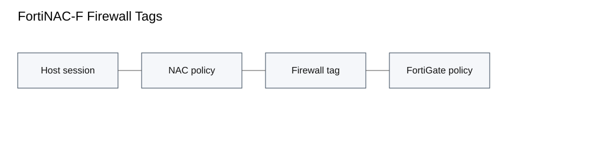
Purpose and mental model. FortiAuthenticator portal policies decide which captive or self-service workflow handles a request. The critical behavior is ordered matching: policies are evaluated top-down and processing stops at the first match, so policy order and authorized access-point definitions are part of the authentication path.
Mechanics. A request arrives on an enabled interface/service, carries source/NAS context, is compared with policy criteria, and then enters the selected portal for authentication, enrollment, password reset, or another self-service action. A valid user credential cannot compensate for a request that was routed to the wrong portal policy.
Configuration / implementation. Define portal objects, authorized AP/NAS entries, and specific-to-general policy order. Enable the required portal service on the interface that users actually reach. Test from each real AP/NAS path rather than testing only from an administrator workstation.
Evidence and verification. Use portal/RADIUS debug to prove the request source and selected policy. Verify interface service exposure and the exact user workflow. If the portal is reachable but an action fails, separate HTTP/service exposure from policy matching and from directory/account operations.
Failure mode and troubleshooting. Fortinet troubleshooting examples include password-reset links returning forbidden behavior until captive-portal access was enabled on the correct interface. Other cases show policy mismatch when the request source did not match the configured access point. Those failures should be repaired at the match/exposure boundary, not by resetting credentials.
Design, scale, and operational implications. Keep AP objects precise and document whether they match an IP, subnet, or FQDN. Put exceptions above broad policies, test after NAS address changes, and include portal-interface exposure in upgrade/change validation.
Primary documentation: https://docs.fortinet.com/document/fortiauthenticator/8.0.2/administration-guide/478574/policies
Scenario source: https://community.fortinet.com/fortiauthenticator-8/troubleshooting-tip-resolving-issues-with-password-reset-via-portal-after-expiry-notification-215025
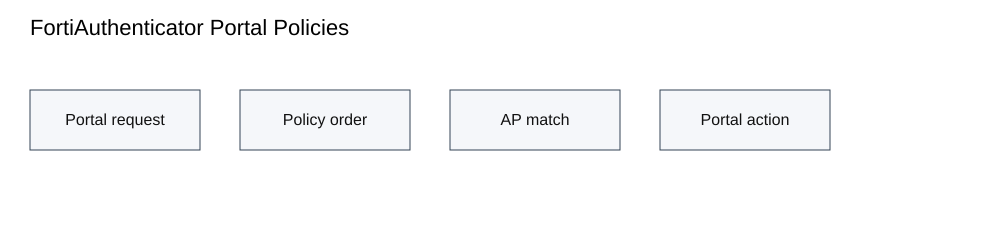
Purpose and mental model. FortiPAM remote-desktop launch is a chain involving the user, launcher definition, FortiClient/PAM session policy, proxy or TCP-forward path, target authentication, and recording/monitoring controls. FortiPAM 1.9 adds choices that materially change that chain, including TCP forwarding and launcher privilege.
Mechanics. TCP forwarding can carry native RDP through the PAM path while bypassing parts of native RDP proxy negotiation. That compatibility choice also changes available controls; features such as restricted-admin behavior, automatic TOTP, or clipboard restrictions may not apply the same way. Launcher privilege determines whether helper/client processes execute in USER or SYSTEM context.
Configuration / implementation. Define the launcher type, executable and initialization/cleanup behavior, select privilege intentionally, enable the RDP service on the secret target, and choose native/proxy/TCP-forward behavior according to required controls. Kerberos NLA can be used where the AD design supports it.
Evidence and verification. Evidence should prove the local launcher process identity, TCP reachability from FortiPAM to the target, FortiPAM/WAD RDP and SSL processing when proxying, and the target-side login event. A locally opened mstsc/desktop client is only evidence of launcher invocation.
Failure mode and troubleshooting. The GNOME RDP troubleshooting workflow starts by testing direct RDP, firewall reachability, target security level, packet capture, and WAD RDP/SSL debug. If direct RDP works but PAM launch fails, the failed boundary is in the PAM transport/proxy/launcher chain.
Design, scale, and operational implications. Select transport mode based on security requirements, not convenience. Standardize FortiClient versions because launcher privilege behavior can differ across releases. Validate session recording and control features again whenever the transport mode changes.
Primary documentation: https://docs.fortinet.com/document/fortipam/1.9.0/administration-guide/570749/fortipam-1-9-0
Scenario source: https://community.fortinet.com/fortipam-52/troubleshooting-tip-fortipam-gnome-rdp-issue-217397
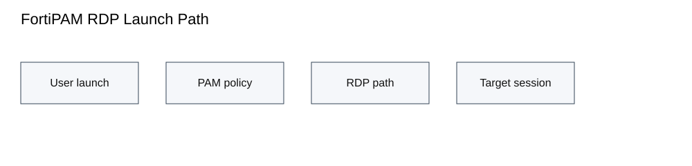
Purpose and mental model. FortiSIEM Collectors separate remote event acquisition from central processing. Devices and agents send to Collectors; Collectors parse and cache events, then upload them to Event Workers. This supports geographic distribution, failure-domain separation, and scaling of ingestion independently from analytics.
Mechanics. Collectors register with the Supervisor and receive worker upload destinations. Agents can be assigned a set of Collectors so another collector can be used when one is unavailable. The Collector parser, local cache/disk, network path, and worker upload path all sit before an event appears in Analytics.
Configuration / implementation. Register each Collector, configure Event Upload Workers, assign agents/sources to appropriate Collector sets, and size guaranteed EPS/disk cache. Prefer DNS names for worker destinations where operationally appropriate and design the collector placement around sites/failure domains.
Evidence and verification. Collector Health provides status, EPS, Last Status Updated, and Last File Received. Query Analytics by Collector ID to verify end-to-end delivery. If packets arrive but events do not, inspect phParser CPU, unknown-event rate, regex/drop rules, cache/disk usage, and the collector-to-worker connection.
Failure mode and troubleshooting. Fortinet troubleshooting guidance calls out high phParser load, disk exhaustion, noisy unknown events, expensive regex filtering, and upstream network loss. A packet capture at the collector proves only source-to-collector delivery; it does not prove parsing or upload.
Design, scale, and operational implications. Filter noise at the source where possible, capacity-plan guaranteed/burst EPS, monitor cache growth, and distribute Collectors so one WAN/site failure does not remove all ingestion paths. Operational dashboards should distinguish collector availability from worker processing health.
Primary documentation: https://docs.fortinet.com/document/fortisiem/7.4.2/user-guide/696439
Scenario source: https://community.fortinet.com/fortisiem-34/troubleshooting-tip-how-to-troubleshoot-collector-issues-170320
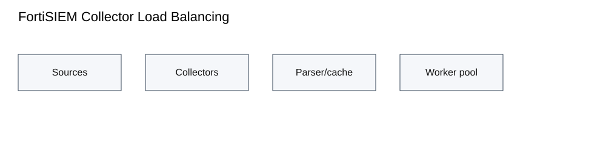
Purpose and mental model. FortiSASE DNS Filter controls resolution before a browser or application opens a destination. It can apply local domain rules, FortiGuard category rating, botnet C&C blocking, DNS translation, SafeSearch enforcement, and query/response logging. The important troubleshooting lesson is that a DNS security decision can break an application even when forward-traffic logs show no firewall deny.
Mechanics. Evaluation order matters. The local domain filter is considered before FortiGuard category filtering. A local block stops the request; a local allow can bypass category filtering; monitor continues to category evaluation. Administrators also choose behavior when FortiGuard rating is unavailable and whether SafeSearch/translation is applied.
Configuration / implementation. Define local domain actions sparingly, configure category actions and botnet handling, make rating-error behavior an explicit risk decision, and enable DNS security logging. SafeSearch should be enabled only after testing business applications and inspection prerequisites.
Evidence and verification. Use Operations security logs for DNS Filter to confirm the queried name, matching local/category rule, and resulting action. Correlate that with forward traffic. If web traffic fails without a forward-policy deny, inspect the DNS Filter decision and the resolved/translated result.
Failure mode and troubleshooting. A FortiSASE troubleshooting case found only some YouTube videos unavailable. Isolating security profiles showed SafeSearch in DNS Filter was the trigger. That is a classic example of why the owning security-profile log is more useful than repeatedly changing firewall policy.
Design, scale, and operational implications. Local allows can intentionally bypass category filtering, so keep them controlled. Decide fail-open/fail-closed behavior for rating outages, document DNS-translation side effects, and retest SafeSearch after browser/application changes.
Primary documentation: https://docs.fortinet.com/document/fortisase/latest/feature-administration-guide/130214/dns-filter
Scenario source: https://community.fortinet.com/fortisase-58/troubleshooting-tip-some-youtube-videos-are-not-accessible-through-fortisase-218815
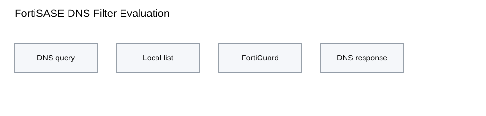
Purpose and mental model. Overlay stickiness keeps a hub-forwarded flow on the same logical overlay when multiple SD-WAN members satisfy the rule. In a dual-overlay ADVPN design, this prevents the first packet from entering on one transport and leaving on another, which can form or attempt a shortcut on an unintended path.
Mechanics. FortiOS supports `service-sla-tie-break input-device` at the SD-WAN zone and `tie-break input-device` in the service. After normal route/SLA eligibility, the incoming device/zone becomes an additional selection preference. This preserves overlay symmetry when the design requires it.
Configuration / implementation. Configure both overlays in the intended SD-WAN zone, define the service input-zone, enable the input-device tie-break, and verify routing still has a usable route for each failover state. Older designs may use policy routes for similar intent, but the SD-WAN tie-break keeps the decision inside the service logic.
Evidence and verification. Verify the ingress tunnel, matched SD-WAN service, eligible members, selected egress member, and resulting ADVPN shortcut endpoints. A shortcut being up is not enough; it must be the shortcut on the transport/overlay intended by the design.
Failure mode and troubleshooting. A practical failure occurs when spoke traffic reaches the hub over the primary overlay but the hub chooses the backup overlay toward the destination spoke. Shortcut signaling can cross overlay families or behave poorly during link changes. Overlay stickiness targets that exact first-packet selection problem.
Design, scale, and operational implications. Use stickiness only when symmetry is an explicit design requirement because it can reduce path flexibility. Test loss of the preferred overlay and confirm the service can still choose a valid alternate. Include shortcut teardown/reformation in failover testing.
Primary documentation: https://docs.fortinet.com/document/fortigate/7.6.4/administration-guide/810981/sd-wan-segmentation-over-a-single-overlay
Scenario source: https://community.fortinet.com/fortigate-3/technical-tip-practical-use-case-of-advpn-overlay-stickiness-to-resolve-the-shortcut-tunnel-failover-issue-in-sd-wan-rule-192554
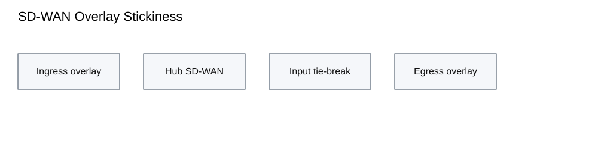
Questions use feature-specific evidence, failure boundaries, implementation choices, and operational scenarios. Distractors are intentionally plausible; answer style is not intended to reveal the key.
Primary lesson authority is Fortinet documentation. Community/support material is used only for scenario grounding. Some scenario articles are older than 30 days because no newer mechanism-matched case was found; this is disclosed instead of substituting an unrelated recent post. Publication is intentionally not suppressed by that warning.